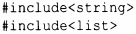
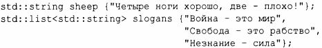
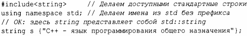
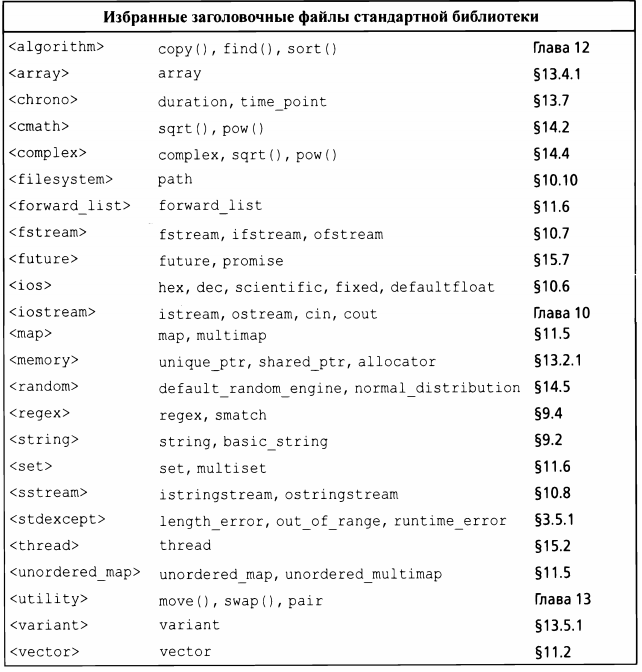

⇐8.2 Компоненты стандартной библиотеки 8.4 Советы⇒
Каждое средство стандартной библиотеки предоставляется через некоторый стандартный заголовочный файл. Например:
Эти строки делают доступными стандартные классы string и list.
Стандартная библиотека определена в пространстве имен (§3.4), именуемом s td. Чтобы использовать средства стандартной библиотеки, используется префикс std::.
Для простоты я редко использую в примерах префикс s td:: явно. Я также не всегда явно включаю нужные заголовочные файлы. Чтобы скомпилировать и запустить фрагменты программ из этой книги, вы должны включить соответствующие заголовочные файлы и сделать доступными имена, которые они объявляют. Например:
Как правило, внесение всех имен из конкретного пространства имен в глобальное - признак плохого вкуса. Однако в этой книге я использую только стандартную библиотеку, и программисты должны знать, что она предлагает.
Ниже приведен список заголовочных файлов стандартной библиотеки; все их объявления находятся в пространстве имен std.
Этот список далеко неполон.
Предоставляются также заголовочные файлы из стандартной библиотеки С, такие как <stdlib.h>. Для каждого такого заголовка есть также версия с именем с префиксом с, и удаленным .h. Эта версия, такая как <cstdlib>, помещает свои объявления в пространство имен std.